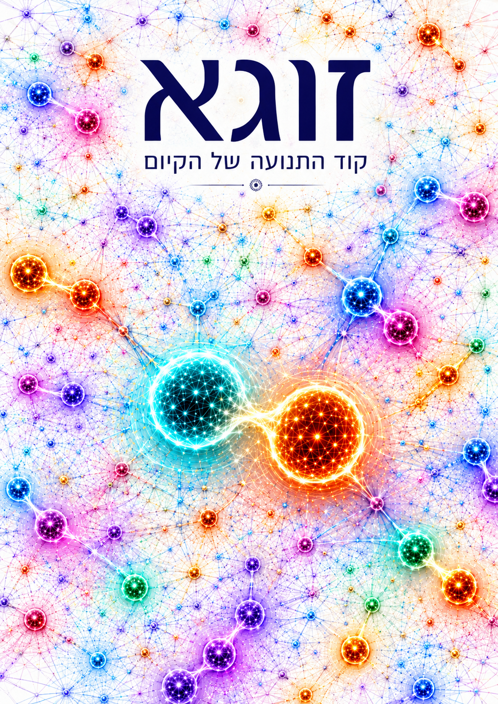

זוגא היא התנועה האינסופית שבין צמד תופעות שביניהם זיקות של ניגוד, השלמה, תלות, עצמאות והשפעה הדדית. ביניהם נפרס מגוון של אפשרויות, והמתח ביניהם משתנה. עצם התנועה האינסופית והשתנות המתח יוצרות אינסוף אפשרויות הנפרסות על פני המגוון ומקיימות את הזוגא.

תורת זוגא
מבנה זוגא ותנועת זוגא
מבנה זוגא
[Zuga Structure = מבנה זוגא]
Zuga = Z= (Z1, Z2, R, τ, I, P)
Z1= Z Phenomenon | Z2= Z Phenomenon;
R= Relations | τ= Tension | I= Information;
P = Infinite Possibilities and States, |P| = ∞ ;
α= Alpha State, β= Beta State…;
Δ= Change;
⇄ = Transition and mutual influence;
Ω={Z1,Z2,Z3,…},∣Ω∣=∞ ;
∀Zx∈Ω:Zx=(Zx1,Zx2,Rx,τx,Ix,Px);
נוסחת תנועת זוגא
Zuga Movement
(Zα ⇄ ΔR,Δτ,ΔI ⇄ Zβ) ∈ P
זוגא נעה מ־Alpha state אל Beta state דרך שינוי ביחסים, במתח ובמידע, בתוך שדה של אינסוף אפשרויות.
Zuga Definition
Zuga Definition
Zuga is the infinite movement between a pair of phenomena linked by relations of opposition, complementarity, dependence, independence, and mutual influence. Between them unfolds a range of possibilities across which the tension varies. The infinite movement and the changing tension generate infinite possibilities that extend across this range and sustain the Zuga.
Understanding Zuga allows us to recognize that we, too, move within Zuga structures and to examine the relations and tensions acting upon us.
[Zuga structure]
תורת זוגא - התנועה האינסופית
זוגא היא התנועה האינסופית שבין צמד תופעות שביניהן זיקה של ניגוד, השלמה, תלות, עצמאות והשפעה הדדית. ביניהן נפרס מגוון של אפשרויות אשר המתח ביניהן משתנה. עצם התנועה האינסופית והמתח יוצרות אינסוף אפשרויות שנפרסות על המגוון ומקיימות את הזוגא.
זוגא, זוגאי וזוגאיות
המילה דואליות משמשת לתיאור מצב שבו שני יסודות שונים, מנוגדים או משלימים מתקיימים בתוך מסגרת אחת. עם זאת, התחילית דו- משמשת בעברית לציון שני צדדים, חלקים או יסודות, אך אינה מבטאת כשלעצמה את טיב היחסים ביניהם, כגון דו-לשוני או דו-ערכי. המילה דואליות מציינת את קיומם של שני היסודות, אך אינה מבטאת כשלעצמה את טיב הזיקה, את המתח המשתנה בין היסודות או את מרחב האפשרויות הנפרס ביניהם.
כדי לתאר את הפילוסופיה הזוגאית באופן מדויק, נדרש מונח חדש שמעצם צורתו מתאר לא רק שני יסודות אלא גם את הזיקה, המתח ומרחב האפשרויות שביניהם.
מתוך צורך במונח עברי ברור יותר נבחרה בספר זה המילה זוגא, שמקורה בארמית ומציינת זוג או צמד, ולענייננו, זוגא היא התנועה האינסופית שבין צמד יסודות שביניהם זיקה של ניגוד, השלמה, תלות, עצמאות או השפעה הדדית. ביניהם נפרס מגוון של אפשרויות אשר המתח ביניהם משתנה. עצם התנועה האינסופית והשתנות המתח יוצרות אינסוף אפשרויות שנפרסות על המגוון ומקיימות את הזוגא.
זוגאי הוא שם התואר המתאר מבנה, תפיסה או ישות המבוססים על זוגא, הפוליטיקה היא זוגאית, הטענה היא זוגאית והקיום הוא זוגאי, מאחר וכל פעולה, כל מחשבה וכל תנועה יוצרים תופעה זוגאית חדשה היוצרת מתח בין התפיסות.
זוגאיות היא התכונה או העיקרון של קיום שני יסודות מובחנים בתוך מערכת אחת, כגון זוגאיות כלכלית הבנויה מזוגא של עקרונות ובהם הונתנות וחברתנות. זוגאיות פוליטית הבנויה מזוגא של אידיאולוגיות פוליטיות.